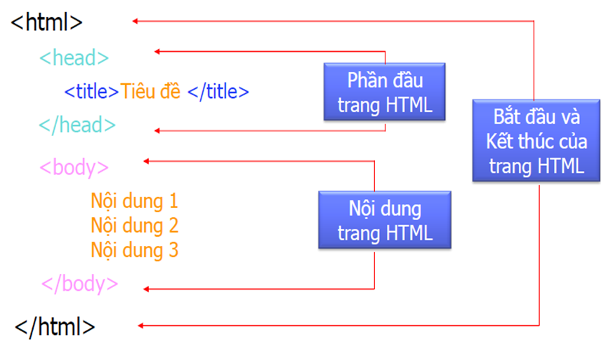

HTML = HyperText Markup Language – Ngôn ngữ đánh dấu siêu văn bản – Ngôn ngữ cơ bản nhất để xây dựng các trang web.
HTML Do Tim Berner Lee phát minh và được W3C (World Wide Web Consortium) đưa thành chuẩn năm 1994.
Phiên bản chính thức mới nhất: HTML 5.1
Cấu trúc của 1 trang 
Một thẻ (tag) thường có 3 hoặc 4 phần:
Tên của thẻ: dùng để nhận dạng chức năng của thẻ
Thuộc tính của thẻ: dùng để nhận biết dữ liệu được hiển thị như thế nào.
Giá trị của thuộc tính thẻ
Hoặc có thêm các thành phần con nằm giữa tag mở và tag đóng của thẻ
Ứng dụng Client-Side:
Thực hiện tại Browser (Netscape Navigator, IE,Firefox, chrome,…)
Script tại Client-Side (Thực hiện các tương tác với người dùng, thay đổi cấu trúc trang web, kiểm tra dữ liệu được nhập vào của người dùng, …)
Ứng dụng Server-Side:
Thực hiện tại WebServer (IIS, Netscape Enterprise Server, ….)
Script tại Server-Side (kết nối CSDL, chia sẻ thông tin giữa các người duyệt web, truy cập hệ thống file trên server, …)
Cách sử dụng
Ý nghĩa:
Internal JS dùng để thực hiện một số công tác trong chính trang html, giúp nhanh chóng load các xử lý mà ko cần tải file js ngoài
External JS giúp việc lập trình nhanh chóng nhờ tính sử dụng lại các hàm đã được tạo sẵn ở ngoài - được các lập trình viên đồng nghiệp viết trước đó